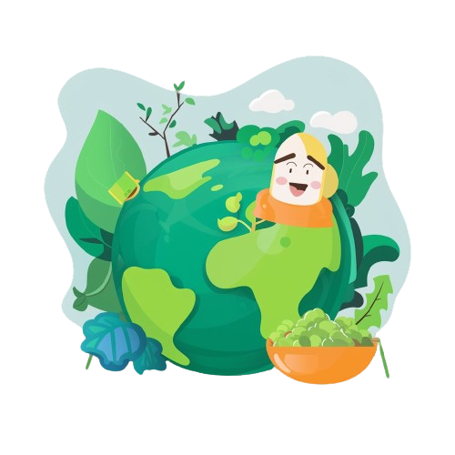

Check if you are
properson or not

Track your activities to see if you're a Pro Planet person!
Click the button to reveal a fun fact!
Your current sustainability score is: 0
Explore sustainable living tips across various categories.
Support local farmers and reduce carbon emissions associated with transportation.
Eating less meat helps decrease greenhouse gas emissions and preserves natural resources.
Opt for buses, trains, or carpools to reduce traffic congestion and air pollution.
Choose active transportation options to stay healthy and minimize your environmental impact.
Reduce waste and support sustainable fashion by buying gently used clothing and goods.
Look for items made from recycled materials or with minimal packaging to reduce your ecological footprint.
The purpose of this website is to provide information and resources to help you live a more sustainable lifestyle.
You can contact us through the contact form on the website or by sending an email to info@example.com.
Yes, we regularly host sustainability workshops and events. You can check our events page for upcoming activities.
There are several ways you can get involved, such as volunteering, participating in our campaigns, or becoming a member. Please visit our "Get Involved" page for more information.
Remember to deselect disposable cutlery while ordering food!